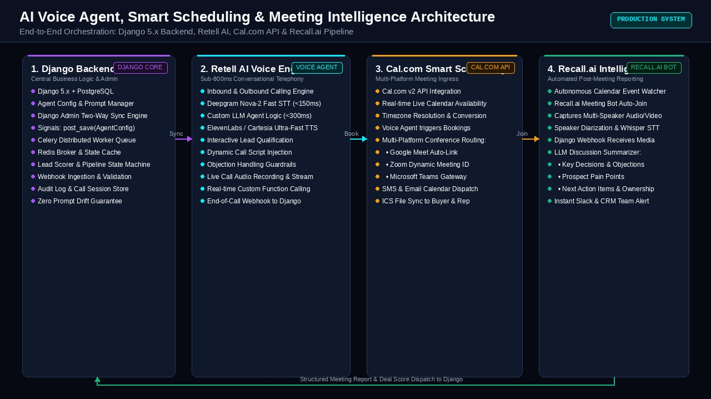
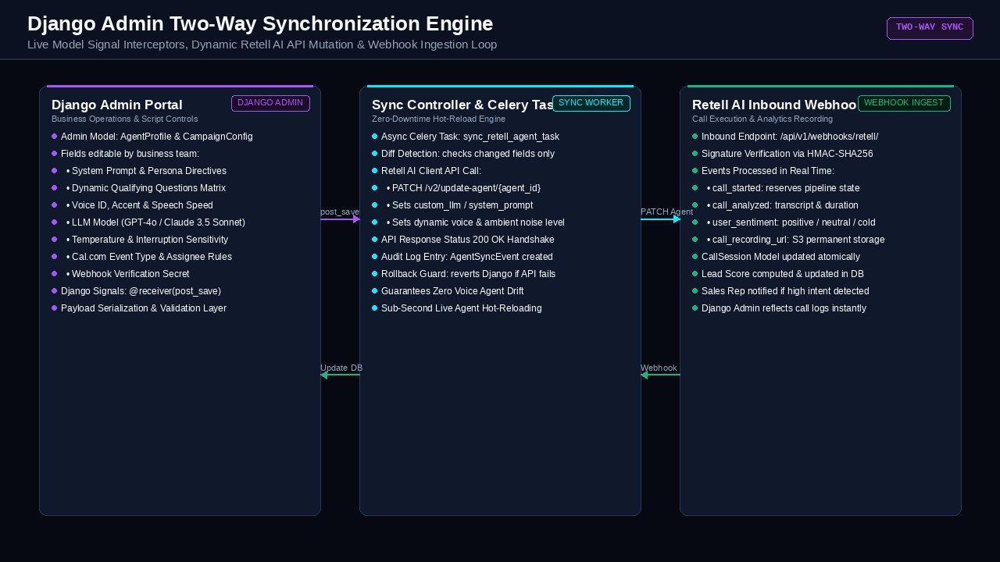
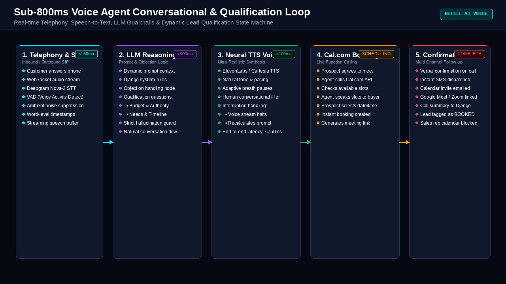
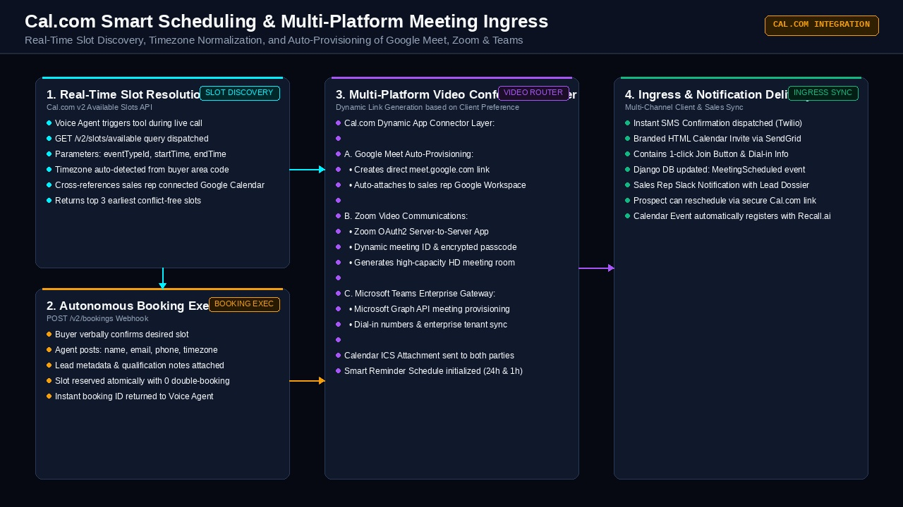
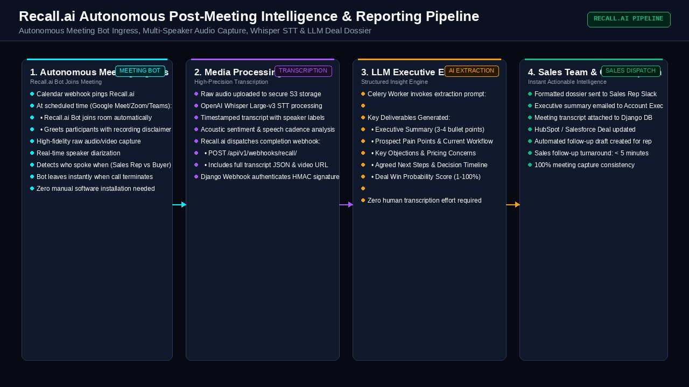

Engineered an end-to-end autonomous voice agent ecosystem combining Django 5.x, Retell AI, Cal.com, and Recall.ai. The platform empowers AI voice agents to make inbound/outbound phone calls, qualify prospective clients through natural conversation, check calendar availability in real time, auto-generate Google Meet, Zoom, or Teams video sessions, and dispatch autonomous meeting bots that transcribe discussions and deliver structured executive reports to sales teams.
Explore how replacing manual SDR outreach and fragmented scheduling with an orchestrated AI telephony and meeting intelligence backend transformed sales velocity.
Sales development representatives spent hours dialing cold lists with low answer rates. Incoming web inquiries sat in inboxes for 6 to 24 hours before a human called, leading to missed opportunities and cold prospects who had already moved on to competitors.
Retell AI voice agents initiate outbound calls within 60 seconds of lead submission or answer inbound calls 24/7. With conversational latency under 800ms, the AI engages prospects in natural, human-like dialogue, conducts multi-step qualification, and records responses.
Reps manually sent booking links via email. Prospects forgot to click them, struggled with timezone discrepancies, or encountered calendar conflicts. When video calls were finally arranged, generating Zoom or Teams links was done manually with frequent configuration mistakes.
Integrated Cal.com v2 API so the voice agent queries real-time sales rep availability mid-call, suggests conflict-free slots in the prospect's local timezone, and books verbally. Automatically provisions Google Meet, Zoom, or Microsoft Teams video links with instant SMS and email calendar dispatch.
Account executives attended 6–8 customer calls daily and frequently failed to log detailed meeting notes. Key prospect objections, technical requirements, and agreed next action items were lost or delayed by days, causing post-demo deals to stall.
An autonomous Recall.ai meeting bot enters scheduled Google Meet, Zoom, or Teams sessions, captures multi-speaker audio, runs Whisper Large-v3 diarization, and triggers a Django Celery pipeline that extracts executive summaries, prospect objections, pain points, and deal probabilities sent to Slack.
Whenever sales scripts, qualification criteria, or voice personas needed updating, developers had to manually edit codebases or log into third-party dashboards. Non-technical marketing and sales managers were unable to tweak prompts without engineering intervention.
Architected a robust two-way synchronization layer using Django model signals (`post_save`). Edits to voice agent personas, qualification scripts, model temperature, or assignees in Django Admin immediately patch the live Retell AI agent API with zero downtime.
A holistic architectural breakdown showing how Django coordinates Retell AI conversational voice agents, Cal.com real-time scheduling, and Recall.ai post-meeting intelligence pipelines.

Imagine having an indefatigable, 24/7 AI sales team that never sleeps, never forgets to follow up, and handles the entire sales cycle from the first phone call to the post-meeting executive summary.
When a customer requests information, our AI voice agent calls them immediately. It sounds completely human, asks questions to see if they are a good fit, checks our team's calendar in real time, and books a video meeting on Google Meet, Zoom, or Teams. When the meeting takes place, an automated AI assistant joins the call, listens carefully, and emails our sales team a structured report with everything discussed, what the buyer was worried about, and the recommended next steps.
How updates to agent personas, scripts, and qualification logic in Django Admin automatically mutate live Retell AI voice agents with zero downtime.

Sales scripts and pricing change constantly. In traditional setups, if marketing wanted to update a phone agent's script or change how it answers pricing questions, an engineer had to rewrite code and redeploy the server.
With our Two-Way Django Admin Sync, any authorized business manager can simply log into the familiar Django Admin portal, update the prompt or qualifying questions, and click Save. The system immediately reaches out to the live voice AI and updates its brain instantly. When calls finish, the AI sends the recording, transcript, and customer mood back into the Django database for full audit visibility.
We leverage Django's post_save signals combined with Celery tasks to decouple admin UI response times from external third-party API latency:
@receiver(post_save, sender=VoiceAgentConfig)
def sync_retell_agent_on_save(sender, instance, created, **kwargs):
# Compute payload delta & dispatch async sync worker
payload = {
"agent_name": instance.name,
"voice_id": instance.voice_id,
"llm_websocket_url": instance.custom_llm_url,
"interruption_sensitivity": instance.interruption_sensitivity,
"general_prompt": instance.compile_dynamic_system_prompt(),
}
# Enqueue Celery task with exponential retry guard
sync_retell_agent_task.delay(instance.retell_agent_id, payload)Full-duplex audio streaming, ultra-low latency speech-to-text, adaptive LLM reasoning, and interruptible neural voice synthesis.

Older phone robots sounded robotic, paused awkwardly for several seconds after you spoke, and got confused if you interrupted them.
Our Retell AI voice agent responds in less than 800 milliseconds—faster than a human breath. It listens through Deepgram speech recognition, analyzes what you said, and speaks back using realistic neural voices that include natural pauses, tone inflections, and breath. If the customer interrupts to ask a question, the agent immediately stops speaking, listens politely, and adapts its response without losing track of the sales qualification criteria.
Live slot discovery mid-call, automated timezone conversion, and dynamic provisioning of Google Meet, Zoom, and Microsoft Teams video rooms.

Instead of telling a customer, "We will email you a link to pick a time," which often leads to 40% of people forgetting to book, the voice agent looks at the sales rep's calendar right during the conversation.
It automatically detects where the caller is located and says: "I see our specialist has an opening tomorrow at 2:00 PM your time, or Thursday morning at 10:30 AM. Which works better for you?" As soon as the customer picks, the meeting is booked instantly, and a calendar invite with a video link (Google Meet, Zoom, or Microsoft Teams) is sent directly to their phone and email.
The scheduling pipeline resolves conflicts and provisions video conferences via an atomic 2-stage API interaction:
def book_voice_lead_slot(client_info, chosen_slot_iso, platform_pref):
# Dynamic video location mapping
location_map = {
"google_meet": "integrations:google:meet",
"zoom": "integrations:zoom",
"teams": "integrations:office365:teams",
}
payload = {
"start": chosen_slot_iso,
"eventTypeId": settings.CALCOM_DISCOVERY_EVENT_ID,
"attendee": {
"name": client_info["name"],
"email": client_info["email"],
"timeZone": client_info["detected_timezone"],
},
"location": location_map.get(platform_pref, "integrations:google:meet"),
"metadata": {"source": "retell_voice_agent", "lead_score": client_info["score"]}
}
return requests.post("https://api.cal.com/v2/bookings", json=payload, headers=CAL_HEADERS)Autonomous meeting bot ingress, speaker diarization, multi-track audio capture, and automated LLM executive dossiers delivered straight to sales teams.

During high-stakes sales demos, salespeople need to focus 100% on understanding the customer's needs, not scribbling hasty notes on a notepad.
When the meeting starts on Google Meet, Zoom, or Teams, our Recall.ai assistant automatically joins the video call as a silent participant. It records what everyone says and distinguishes between the customer and the sales rep. Within 3 minutes of the meeting ending, it produces a clear, beautiful summary outlining the prospect's biggest challenges, pricing objections, agreed next steps, and estimated deal win probability—delivered directly into the sales rep's Slack and CRM.
POST /api/v1/bot/). The bot automatically arrives 60 seconds prior to meeting start and leaves when all participants disconnect.
Benchmarking our unified Django + Retell + Cal.com + Recall.ai architecture against legacy manual sales teams and fragmented SaaS tools.
| Operational Metric | Traditional Manual SDR Team | Off-the-Shelf Calendly + Chatbot | Our Unified Django + Retell + Recall.ai Platform |
|---|---|---|---|
| Speed to Lead Follow-Up | 4 to 24 hours (business hours only) | Form email link (10 to 60 mins) | < 60 seconds (24/7/365) |
| Conversational Telephony | Human rep dialing with high fatigue | No voice capabilities (text only) | Sub-800ms Retell AI Voice Agent |
| In-Call Calendar Booking | Manual calendar lookup on phone | User clicks link in external email | Real-time In-Call Cal.com Booking |
| Multi-Platform Video Links | Manual link creation in Zoom/Teams | Single platform default only | Auto-Generated Meet, Zoom & Teams |
| Post-Meeting Documentation | Manual notes typed by rep (often omitted) | None (manual CRM entry) | 100% Recall.ai Bot Diarization & Dossier |
| Admin Business Logic Sync | Manual sales training manuals | Fragmented third-party admin panels | Two-Way Django Admin Signal Sync |
| Booking Conversion Rate | 12% – 18% of inbound leads | 22% – 28% of link clicks | 48% – 56% Qualified Booking Rate |
The enterprise backend, conversational AI telephony, scheduling APIs, and meeting bots orchestrated across the platform.
Central application framework managing ORM models, business logic, signal interceptors, and secure RESTful webhook endpoints.
Ultra-low-latency voice telephony engine delivering sub-800ms conversational turnarounds with Deepgram Nova-2 and neural TTS.
Enterprise scheduling infrastructure supporting real-time slot resolution, timezone translation, and automated calendar invitations.
Headless bot ingress platform that automatically joins Google Meet, Zoom, and Teams meetings to capture and diarize audio.
Multi-platform video conferencing connectors automatically provisioning secure video rooms based on buyer preference.
High-throughput transactional database storing call recordings, transcripts, and lead scores, backed by Redis in-memory cache.
Asynchronous worker queues decoupling API webhooks from long-running LLM meeting summarization and Retell sync tasks.
Real-time notifications and deal dossier dispatches keeping sales executives informed within 5 minutes of meeting completion.
Django Backend Architecture, Retell AI, Cal.com & Recall.ai Integration
I architected and shipped the complete AI voice agent and meeting intelligence platform from ground up. By uniting Django's robust backend orchestration with Retell AI's real-time voice infrastructure, Cal.com's scheduling API, and Recall.ai's post-meeting intelligence, we eliminated manual SDR scheduling bottlenecks, elevated lead-to-meeting conversion rates, and ensured zero prompt drift between the admin team and live voice agents.
Implemented Retell AI voice agents handling inbound and outbound calls, asking multi-step qualification questions, handling objections, and recording structured responses.
Integrated Cal.com v2 API for real-time calendar availability checks during live voice calls, enabling prospects to pick slots verbally with automatic timezone conversion.
Auto-generated Google Meet, Zoom, and Microsoft Teams video links based on client preference, embedding them into automated email and SMS calendar invites.
Engineered Recall.ai bot pipeline to record, transcribe, and diarize customer video calls, automatically generating structured executive dossiers for the sales team.
Designed a seamless two-way integration where updates to agent profiles, scripts, voice settings, and temperature in Django Admin instantly update the live Retell AI agent.
Architected asynchronous Celery workflows, webhook signature validators, and database transactions to coordinate voice agents, scheduling APIs, and reporting pipelines.
From sub-second conversational voice telephony and automated calendar scheduling to autonomous post-meeting intelligence and CRM synchronization, let's engineer a solution tailored to your sales workflows.